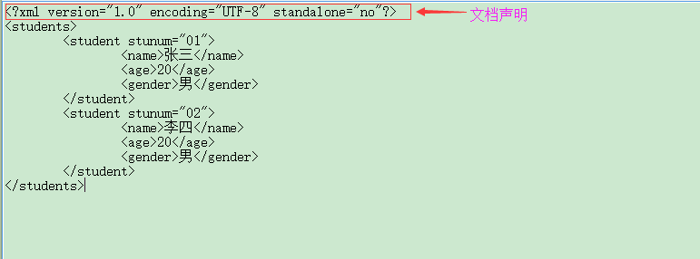
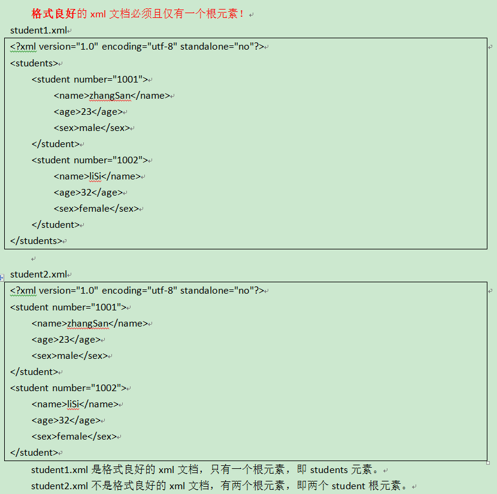
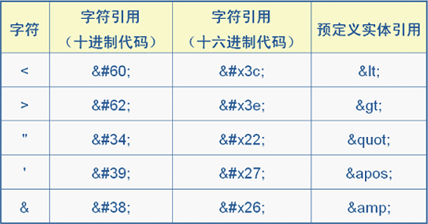

XML是区分大小写的
XML是区分大小写的
XML文档的组成
- XML文档声明
- XML处理指令
- XML元素
- XML转义字符和CDATA区
- XML注释
XML文档声明
XML文档声明如下：

- version属性：用于说明当前xml文档的版本，因为都是在用1.0，所以这个属性值大家都写1.0，version属性是必须的。
- encoding属性：用于说明当前xml文档使用的字符编码集，xml解析器会使用这个编码来解析xml文档。encoding属性是可选的，默认为UTF-8。注意，如果当前xml文档使用的字符编码集是gb2312，而encoding属性的值为UTF-8，那么一定会出错的。
- standalone属性：用于说明当前xml文档是否为独立文档，如果该属性值为yes，表示当前xml文档是独立的，如果为no表示当前xml文档不是独立的，即依赖外部的约束文件。默认是yes。
- 没有xml文档声明的xml文档，不是格式良好的xml文档
- xml文档声明必须从xml文档的1行1列开始
XML标签
基本语法
- xml元素包含：开始标签、元素体（内容）、结束标签。例如：<hello>大家好</hello>
- 空元素：空元素只有开始标签，没有元素体和结束标签，但空元素一定要闭合。例如：<hello/>
- xml元素可以包含子元素或文本数据。例如：<a><b>hello</b></a>，a元素的元素体内容是b元素，而b元素的元素体内容是文本数据hello
- xml元素可以嵌套，但必须是合法嵌套。例如：<a><b>hello</a></b>就是错误的嵌套
根元素

元素命名规范
- 区分大小写：<a>和<A>是两个元素
- 不能以数字开头：<1a>都是错误的
- 最好不要以xml开头：<xml>、<Xml>、<XML>
- 不能包含空格
元素属性
- 属性由属性名与属性值构成，中间用等号连接
- 属性值必须使用引号括起来，单引或双引
- 定义属性必须遵循与标签名相同的命名规范
- 属性必须定义在元素的开始标签中
- 一个元素中不能包含相同的属性名
XML转义字符和CDATA区
转义字符

CDATA区
当大量的转义字符出现在xml文档中时，会使xml文档的可读性大幅度降低。这时如果使用CDATA段就会好一些。特别是在使用mybatis的时候，会有大量的SQL语句写在xml文件中，就需要大量的转义（特别是大于小于号），这时候使用CDATA区就比较方便。
CDATA区的语法：<![CDATA[需要转义的内容]]>
XML注释
XML注释以<!--开头，以-->结束，不能包含--